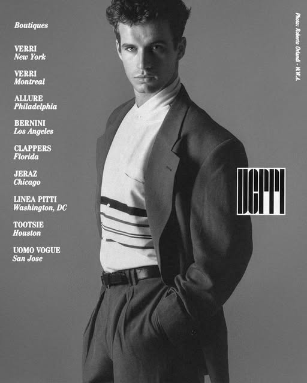

| Nationality | Austrian |
| Born | 1965 Near Vienna, Austria |
| Years active | 1980–1995 (modeling) 1995–present (management) |
| Known for | Discovered by Helmut Lang at age 15; one of the GQ golden boys of the 1980s; Verri, Enrico Coveri, Stephen Sprouse; shot by Steven Meisel, Bill King, Pamela Hanson; founder of Walter Schupfer Management |
| Other work | Founder, Walter Schupfer Management (WSM), 1995–present |
| Featured in |
The Gallery The Commercial Male |
Walter Schupfer (born 1965 near Vienna, Austria) is an Austrian model and creative management founder, discovered by Helmut Lang at the age of fifteen — one of the earliest and most significant discovery stories in the documented history of European male modeling.[1] He was one of the GQ golden boys of the 1980s, shot by Steven Meisel, Bill King, and Pamela Hanson across a career that ran through the most significant menswear brands of the decade before he turned the camera around and founded Walter Schupfer Management (WSM) in 1995.[2]
Early life
Schupfer was born in 1965 and raised in a small village just outside of Vienna. He was discovered by Helmut Lang at fifteen — a pedigree that, in the context of Austrian fashion history, has no real equivalent: Lang would go on to become one of the most influential designers of the 1990s, and his eye for a face at that early stage of his own career speaks to what he saw in Schupfer before either of them had fully arrived.[1]
Modeling career
Schupfer made his way to America and became an internationally recognized fashion model almost immediately. Steven Meisel photographed him for GQ. Pamela Hanson shot him for Rolling Stone in 1986. Bill King paired him with Renée Simonsen and Estelle Lefébure for the Spring 1986 Enrico Coveri campaign — a placement that put him alongside two of the most significant female models of the era.[2]
In 1987, he appeared in Stephen Sprouse’s fashion spread for Elle alongside Stephanie Seymour. The Verri campaign, photographed by Roberto Orlandi for Spring/Summer 1989, placed him in one of the defining Italian menswear advertisements of the late 1980s — a campaign whose clean, architectural composition and quiet authority read as a direct counterpoint to the louder, more physical campaigns that were beginning to define the decade’s end.[3]
His campaign work is documented in The Campaign Archive.[4]
Walter Schupfer Management
Though Schupfer had tremendous success in front of the camera, his real interest, by his own account, always lay behind it. In 1995, armed with a passion for photography, a strong business instinct, and intimate exposure to the leaders of the fashion and advertising industries accumulated across fifteen years of modeling, he founded Walter Schupfer Management.[1] WSM has since become a premier creative management company representing internationally acclaimed photographers, stylists, and mixed-media artists — a transition from model to industry architect that very few careers in the documented history of the business have accomplished at this level.[5]
Recognition
He is ranked on the Male Model Index and on MaleIconic — The 100 Greatest Male Models of All Time.[6]
He is featured in The Gallery, the photographic archive maintained by The Commercial Male, and in The Consensus.[7][8]
The UOMO Classico blog, one of the most comprehensive independent archives of classic male fashion imagery, has documented twenty-seven separate editorial and campaign appearances by Schupfer — among the highest counts for any model in that archive.[2]
Legacy
Schupfer is one of the most underrated male models in the documented history of the industry — a face that defined a specific register of 1980s European menswear (quieter, more intellectual, less overtly physical than the American market demanded) and then, rather than riding the career into diminishing returns, pivoted into building an institution that shaped the next generation of fashion image-making from the other side of the lens. He married fellow model Louise Vyent, and they have two children, Max and Uma.[1][2]